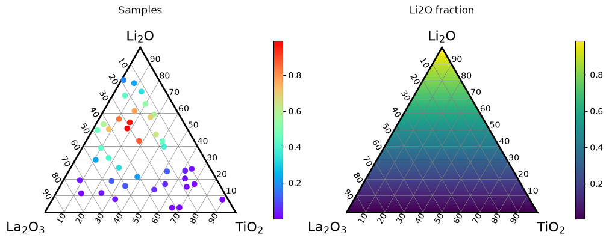
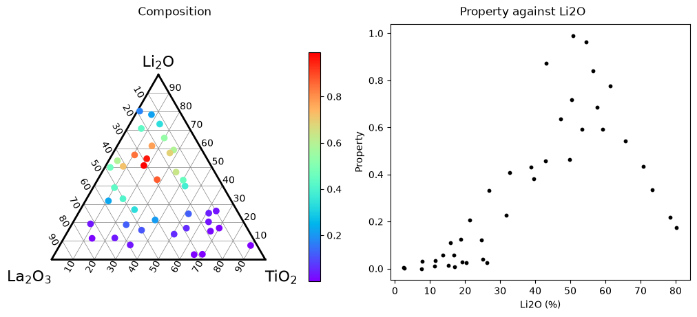
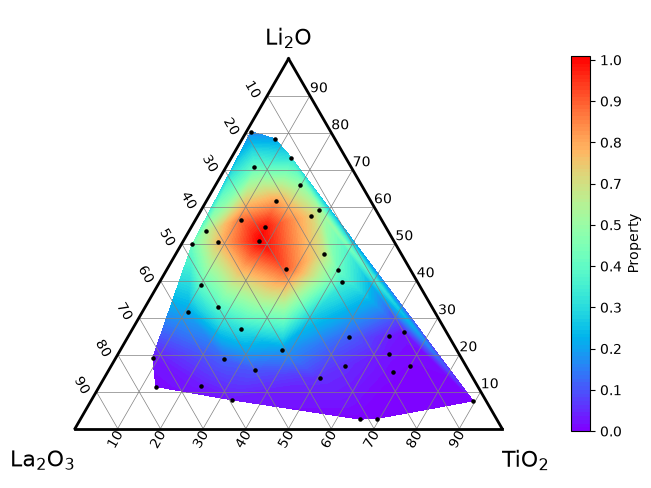
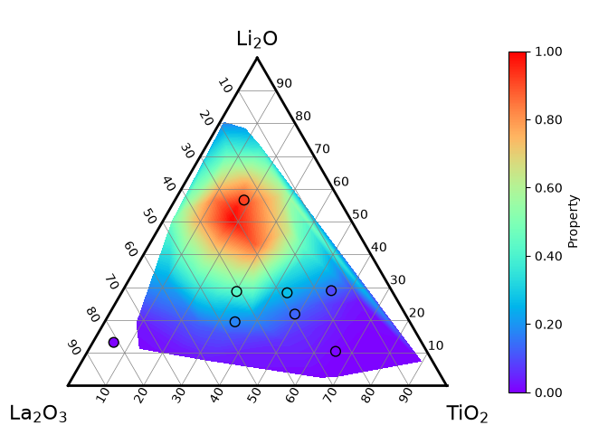
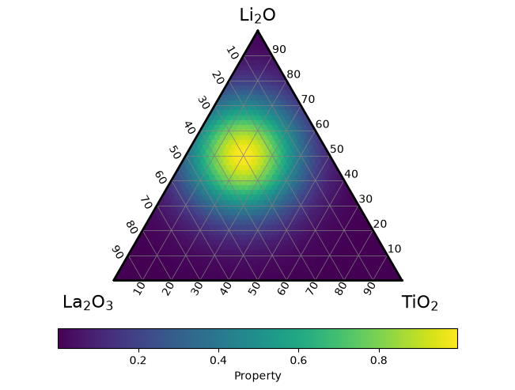

Layout and colorbars#
This page explains how TernaryDiagram adjusts the figure layout and adds colorbars after plotting, how to turn these side effects off, and how to draw on figures with a layout engine, multiple panels or subfigures.
The values on this page are made up for illustration. They come from a smooth function of the composition of Li2O, La2O3 and TiO2, evaluated at 40 random compositions, and are not measured properties of this system.
import matplotlib.pyplot as plt
import numpy as np
from ternary_diagram import TernaryDiagram
materials = ["Li2O", "La2O3", "TiO2"]
def property_value(a, b, c):
"""A made-up property between 0 and 1, highest near (0.5, 0.3, 0.2)."""
distance2 = (a - 0.5) ** 2 + (b - 0.3) ** 2 + (c - 0.2) ** 2
return np.exp(-distance2 / 0.08)
rng = np.random.default_rng(0)
compositions = rng.dirichlet([1.5, 1.5, 1.5], size=40)
values = property_value(*compositions.T)
Automatic layout#
After each plotting call, such as scatter() or plot(), a TernaryDiagram can call Figure.tight_layout() to fit the margins of the figure to its contents.
Creating the diagram and changing its parts with the set_* methods never adjust the layout.
The keyword argument tight_layout of TernaryDiagram decides whether the plotting calls do:
|
v3.x |
v4.0.0 |
|---|---|---|
Not specified ( |
Calls |
Leaves the layout untouched, as with |
|
Calls |
Same as v3.x |
|
Leaves the layout untouched |
Same as v3.x |
The table applies only to a figure without a layout engine, such as one created by plt.subplots() or plt.figure() without layout.
A figure with a layout engine (layout="constrained", "compressed" or "tight", also when it is set by the rcParams figure.constrained_layout.use or figure.autolayout) and a subfigure are never adjusted, whatever the value of tight_layout, and no warning is emitted for them.
To control the layout of a figure without a layout engine yourself, pass tight_layout=False and call fig.tight_layout() once, after the last plotting call.
This is also the behavior of v4.0.0, so the code works the same before and after the change:
fig, ax = plt.subplots()
td = TernaryDiagram(materials, ax=ax, tight_layout=False)
points = td.scatter(compositions, z=values, colorbar=True)
fig.tight_layout()

Pass tight_layout=True instead to keep the v3.x behavior without the warning.
Notebooks show figures cropped to their contents, so the margins mostly matter in the files saved with fig.savefig.
Recommended: layout engines#
The recommended way is to create the figure with a layout engine of matplotlib, as the other examples in this user guide do: plt.subplots(layout="constrained").
The engine arranges the Axes, their titles and the colorbars every time the figure is drawn, so the layout stays correct after every plotting call, TernaryDiagram leaves it alone and no warning is emitted.
tight_layout does not need to be passed.
Multiple panels#
Create all the Axes with one call, such as plt.subplots(nrows, ncols, layout="constrained"), and make one TernaryDiagram for each Axes with ax=.
Each diagram decides about its own colorbars, and the layout engine places each colorbar next to its own Axes:
fig, axes = plt.subplots(1, 2, figsize=(10, 4), layout="constrained")
left = TernaryDiagram(materials, ax=axes[0])
points = left.scatter(compositions, z=values, colorbar=True)
left_title = axes[0].set_title("Samples")
right = TernaryDiagram(materials, ax=axes[1])
heatmap = right.heatmapf(lambda a, b, c: a, cmap="viridis", colorbar=True)
right_title = axes[1].set_title("Li2O fraction")

layout="compressed" gives the same layout as "constrained" for ternary diagrams: it removes the space around Axes whose box shrinks to a fixed aspect ratio, but a ternary diagram keeps its box and adjusts its data limits instead.
To show the plots of several diagrams against one colorbar, see Color range and colorbars in Heatmaps and contour maps.
Subfigures#
A subfigure (fig.subfigures) is a part of a figure with its own Axes, title and colorbars, for example to put a ternary diagram next to an ordinary plot.
TernaryDiagram never adjusts the layout of a subfigure, whatever the value of tight_layout, so give the parent figure a layout engine, which arranges the subfigures and their contents:
fig = plt.figure(figsize=(10, 4.5), layout="constrained")
left, right = fig.subfigures(1, 2)
td = TernaryDiagram(materials, ax=left.subplots())
points = td.scatter(compositions, z=values, colorbar=True)
left_title = left.suptitle("Composition")
ax = right.subplots()
markers = ax.scatter(compositions[:, 0] * 100, values, color="black", s=10)
x_label = ax.set_xlabel("Li2O (%)")
y_label = ax.set_ylabel("Property")
right_title = right.suptitle("Property against Li2O")

For a diagram drawn on a subfigure, td.fig is the SubFigure, not the whole figure; use the figure that you created (fig above) to save it.
Automatic colorbars#
The plots colored by values can add a colorbar automatically: scatter() with z, contour(), tripcolor() and heatmapf().
Their argument colorbar decides whether they do.
The other plots, such as plot, fill, text, annotate and scatter without z, never add a colorbar.
|
Diagram without a colorbar |
Diagram that already has a colorbar, v3.x |
Diagram that already has a colorbar, v4.0.0 |
|---|---|---|---|
Not specified ( |
Adds one |
Adds another one, and emits a |
Adds none |
|
Adds one |
Adds another one, without a warning |
Same as v3.x |
|
Adds none |
Adds none |
Same as v3.x |
A diagram “already has a colorbar” when a colorbar was added through this TernaryDiagram, either automatically or with its colorbar() method, and was not removed with Colorbar.remove().
The following colorbars do not count:
colorbars added with matplotlib directly, such as with
fig.colorbarorplt.colorbar;colorbars of another
TernaryDiagram, even on the same figure;colorbars removed with
Colorbar.remove().
So the default colorbar=None behaves the same in v3.x and v4.0.0 for the first plot colored by values on a diagram; it differs only from the second one on.
Pass colorbar explicitly whenever a diagram has more than one plot colored by values: False to share the colorbar that is already there, True to add one for each plot on purpose.
The automatic colorbar is available as the colorbar attribute of the returned plot, so you can change it afterwards, for example to add a label:
fig, ax = plt.subplots(layout="constrained")
td = TernaryDiagram(materials, ax=ax)
contours = td.contour(compositions, values, colorbar=True)
markers = td.scatter(compositions, color="black", s=5)
contours.colorbar.set_label("Property")

Here scatter without z adds no colorbar, so the diagram keeps one colorbar.
To replace an automatic colorbar, call contours.colorbar.remove(): the diagram no longer counts it, and the next plot colored by values adds a colorbar again without a warning.
Adding a colorbar yourself#
To choose the settings of the colorbar, draw the plots with colorbar=False and add one colorbar with colorbar(), passing the plot that it describes.
When several plots share the colorbar, give them the same z_min, z_max and cmap, so that the same color means the same value in all of them.
Here a contour map of the 40 “measurements” and 8 new “measurements” drawn as points on top share one colorbar with a label and two decimal places:
new_compositions = np.random.default_rng(1).dirichlet([1.5, 1.5, 1.5], 8)
new_values = property_value(*new_compositions.T)
fig, ax = plt.subplots(layout="constrained")
td = TernaryDiagram(materials, ax=ax)
contours = td.contour(compositions, values, z_min=0, z_max=1, colorbar=False)
points = td.scatter(
new_compositions,
z=new_values,
z_min=0,
z_max=1,
s=60,
edgecolors="black",
colorbar=False,
)
cbar = td.colorbar(points, label="Property", format="%.2f")

Either plot can be passed, since both use the same color scale. The points are passed here: a colorbar made from a contour map is divided at its levels and places its tick labels at some of them, such as 0.11 and 0.22.
By default, colorbar places a vertical colorbar on the right with shrink=0.8 (80 % of the height of the Axes), and shows one decimal place in the tick labels (format="%.1f").
label, format, shrink and the other arguments of Figure.colorbar, such as ticks, extend or pad, change it; ax cannot be given, since the space is always taken from the Axes of the diagram.
location chooses the side of the diagram, and the direction of the colorbar follows it: location="bottom" (or "top") gives a horizontal colorbar. An orientation given together with location must agree with it, or matplotlib raises a TypeError.
fig, ax = plt.subplots(layout="constrained")
td = TernaryDiagram(materials, ax=ax)
heatmap = td.heatmapf(property_value, cmap="viridis", colorbar=False)
cbar = td.colorbar(heatmap, label="Property", location="bottom")

A colorbar added with colorbar counts as a colorbar of the diagram, as described in Automatic colorbars.
Keep passing colorbar=False to the plots colored by values that you draw on the diagram afterwards, or each of them adds another colorbar.
Migrating from v3.x#
ternary-diagram 4.0.0 will change the defaults of tight_layout and colorbar as shown in the two tables above.
Code that draws on a figure with a layout engine (or passes tight_layout) and passes colorbar to every plot colored by values emits no FutureWarning about the layout or colorbars, and gets the same layout and colorbars in v3.x and v4.0.0.
Migrating to v4.0.0 shows each warning, the calls that emit it and how to keep the current behavior or adopt the new one, and also lists the other changes of v4.0.0, such as the renamed argument flag_cbar and the formatting of annotations.
See also#
Getting started explains how to draw on existing Axes and how to pass compositions.
Heatmaps and contour maps explains how to set the color range and the colormap of the plots colored by values.